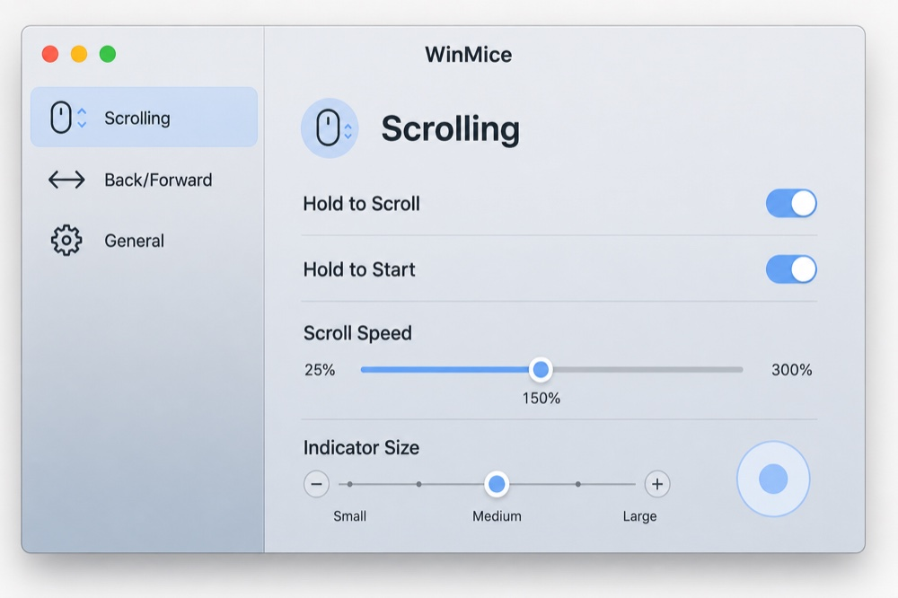
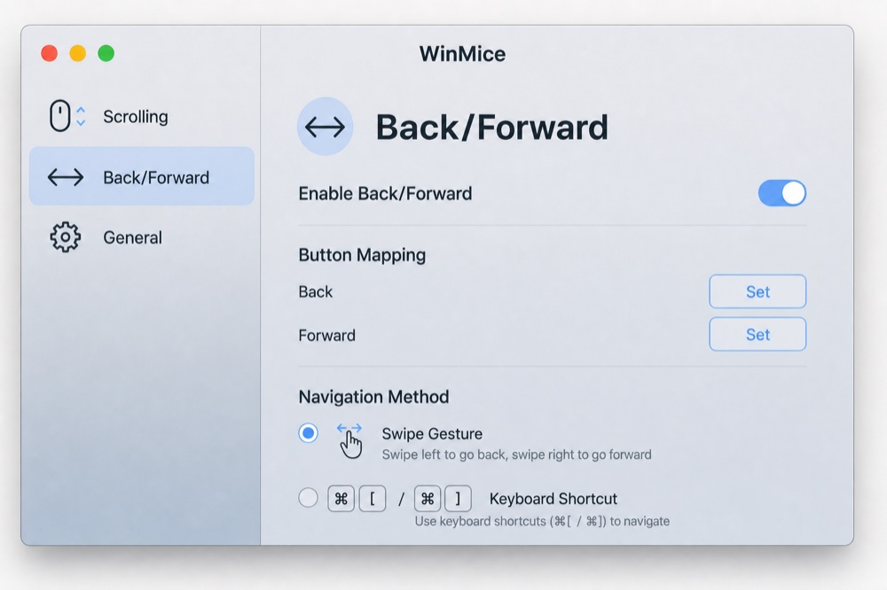

Middle-click vector scroll
Click the middle button, move away from the anchor, and scroll by direction and distance — Hold to Scroll or Hold to Start.

Two mouse behaviors Mac never quite matched — until now.
Click the middle button, move away from the anchor, and scroll by direction and distance — Hold to Scroll or Hold to Start.

Map buttons 4 and 5 (or your own) to system-wide swipe or ⌘[ / ⌘] navigation, on press or release.

Native Swift and AppKit. One lightweight menu-bar process. No bundled runtime.
Pick a path — both are first-class.
Open the DMG, drag WinMice.app to /Applications, then open it. Grant Accessibility when asked. Release builds are Developer ID signed and notarized by Apple.
brew tap anibalribeiro/winmice
brew trust anibalribeiro/winmice
brew install --cask winmice